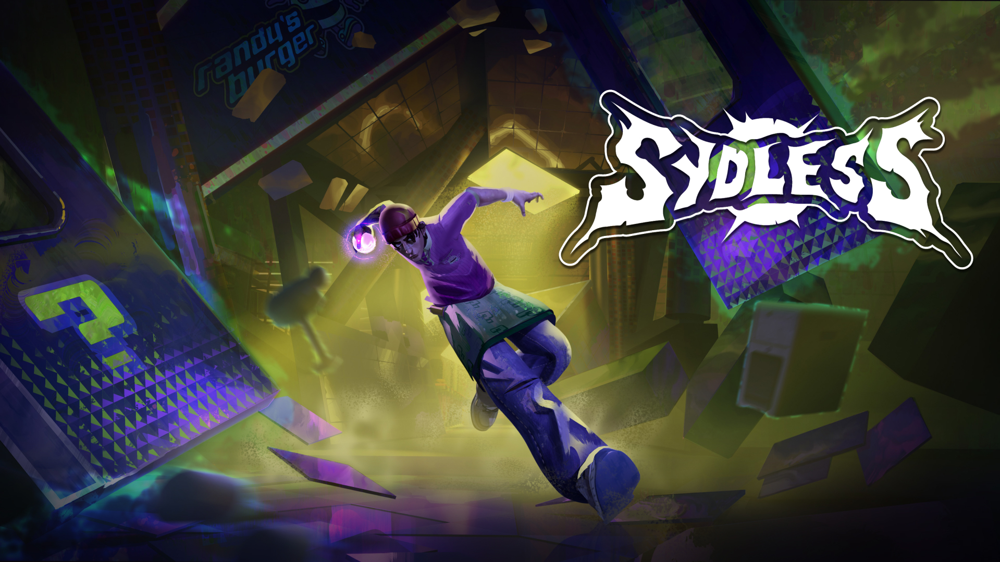
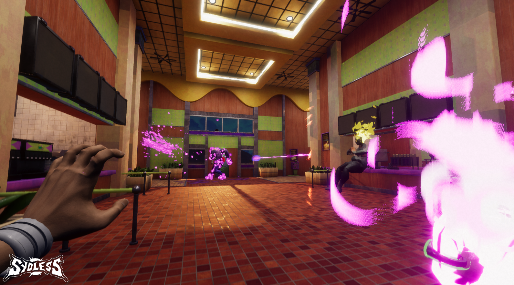
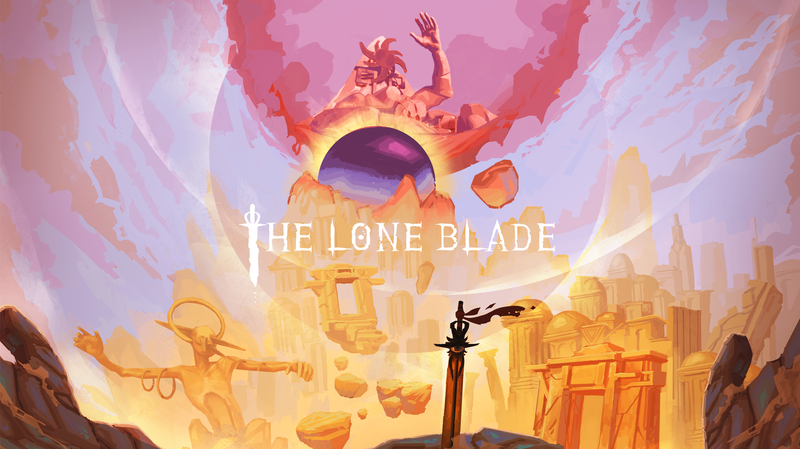
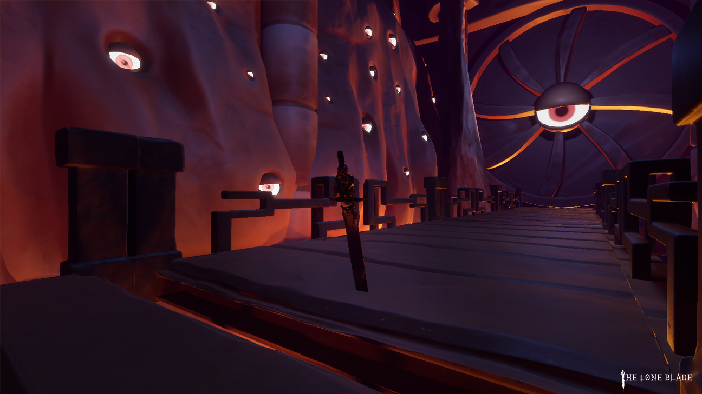
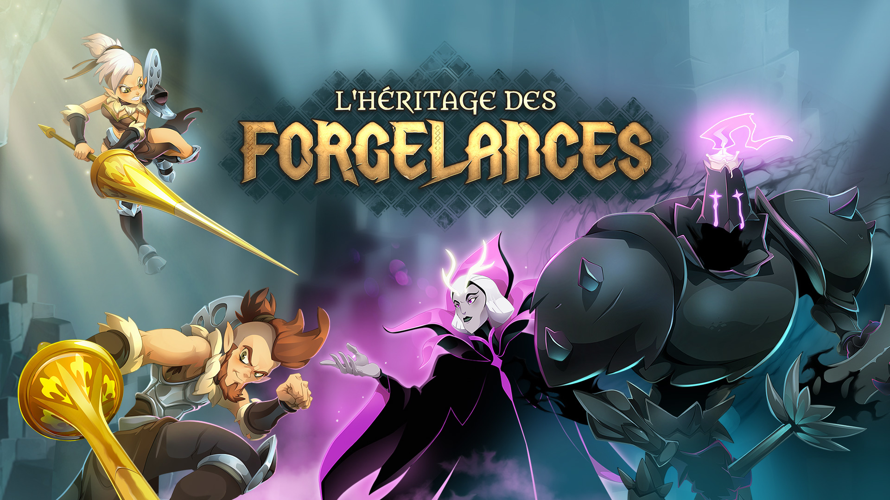
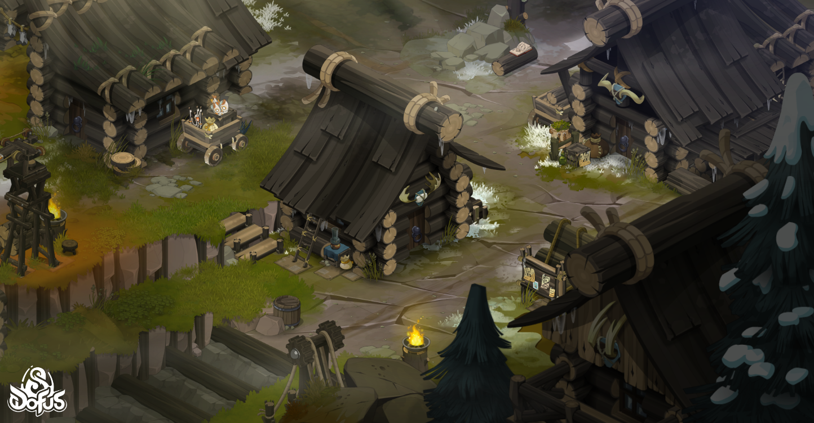

Jams & Prototypes
Here are some projects mostly made on the occasion of game jams, whether during my studies or my free time.
Boris and...
... the Miserable Factory of Mr. Bossman ! A satisfyingly crazy game where you gotta sort delicious soups from various garbage in order to get your employee of the month's gratification. Available on itch !

Victor and...
... the Mystery of the Mysterious Meat Machine ! Your first job ever, what could go wrong ? An investigation puzzle game with a zest of horror. Available on itch !

Sanctuary
The world tree is dying, your once luxuriant forest is now covered by darkness... A plateformer puzzle game. Available on itch !

Crimson Samurai
A ronin, a cursed sword, and a lot of demons to slay ! A beat them all game with a parry mechanic. Available on itch !

Spirit Links
The balance as been broken and formerly allied peoples are fighting against each other. An asynchronous team versus team boardgame with a twist.

Professional
As employee and independant, I had the occasion to work on various professional projects, developing content intended for the industry.
Sydless
You're lost in a anomanicly distorted reality and must find a way out, but the further you progress the more your environment is withering. A super-fast-fps with a magic bouncing ball. Latest game from Opia Games, yet to be released.


The Lone Blade
A poor soul trapped in a sword, seeking for redemption and hoping to free itself while climbing the sacred mountain. A 3D plateformer with complex movement mechanics. First game from Opia Games, released in 2023. Available on steam !


Dofus
The mythic French MMORPG, full of magic and mysteries. From the sordid sewers of Bonta to the cosy bonfires of Albuera, I contributed to the expansion of its world. My latest content update !


About Me

Games have always been part of my life. Whether it be through children's play, sports, board games or of course video games, even daily tasks can be seen as such. Our world is full of wonders and I believe that it only requires a bit of fantasy to experience it the best way possible.
It was only natural to start learning development, as it seems to me like the most fun and practical way to bring my ideas to life. I just fell in love with its gymnastics of the mind, overcoming conceptual and technical challenges becoming a true hobbie.
Curious and willing, I'm always looking for new notions to learn, new concepts to explore and stuff to create. More than anything, I love to share my work and learn from others, as its feels like it gives sense to the act of creation.